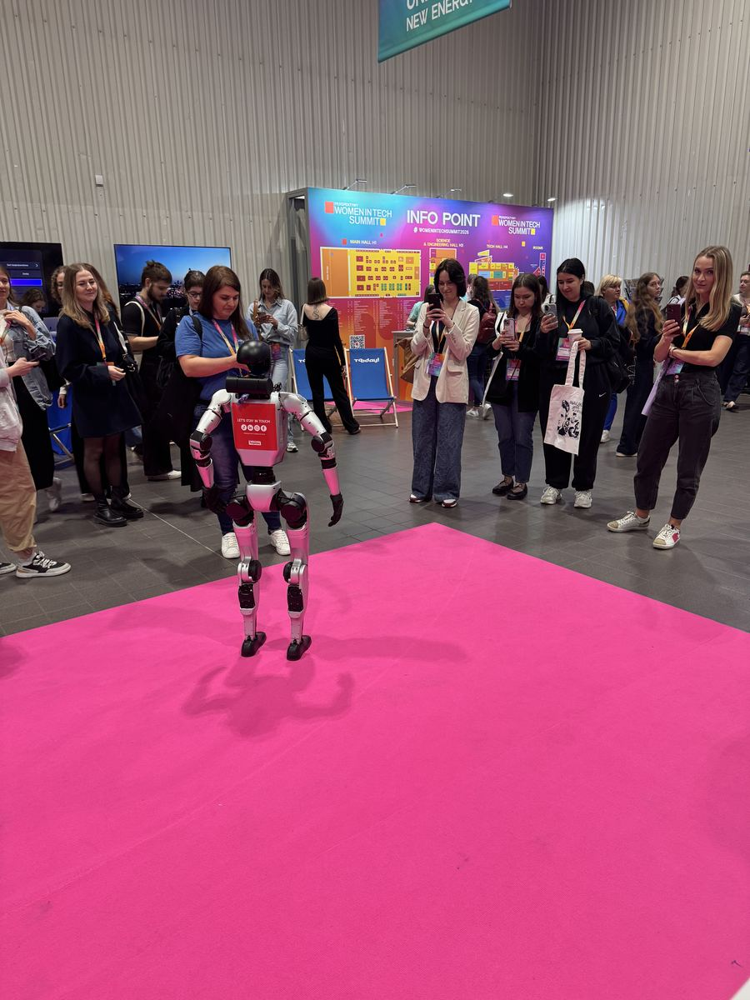

Wynajem robotów · Lublin · Eventy
Wynajem robota humanoidalnego
w Lublinie –
Unitree G1.
Obsługujemy eventy w Lublinie i województwie lubelskim. Robot Unitree G1 dotrze do Centrum Kongresowego, Targów Lublin i do każdego hotelu konferencyjnego w centrum miasta.
Bez zaliczki, płacisz po wydarzeniu. Odpowiadamy zwykle w ciągu 30 minut.
Wolisz zadzwonić? +48 531 408 004
- Transport w cenie
- Operator w cenie
- Branding bez dopłat

100+
wydarzeń w pięciu krajach – gale, targi, konferencje, eventy firmowe i plenerowe
- 5
- krajów: Polska, Litwa, Niemcy, Czechy, Rumunia
- 3 × TVP
- „Pytanie na śniadanie”, Teleexpress i TVP Gdańsk
- 0 zł
- zaliczki – fakturę wystawiamy po wydarzeniu
- 30 min
- na odpowiedź z ceną – przez telefon od razu
Widziani w
Co zyskujesz
w Lublinie
-
Wyróżnienie
Zatrzymaj tłumy
G1 ma 132 cm wzrostu i chodzi na dwóch nogach, więc widać go z daleka, także zza pleców innych gości.
Zapytaj o wycenę → -
Zasięg
Wiralowy marketing
Goście publikują zdjęcia i filmy z robotem często jeszcze w trakcie eventu. Jeśli robot nosi Twoje logo, widać je na tych nagraniach.
Zapytaj o wycenę → -
Dojazd
Transport w cenie
Dowozimy robota w Lublinie bez żadnych dopłat za kilometry. Cena, którą podajemy, to cena ostateczna, bez niespodzianek.
Zapytaj o wycenę →
Lublin
Lublin – wschodzące centrum eventowe wschodniej Polski
Lublin to największe miasto wschodniej Polski i dynamicznie rozwijający się ośrodek akademicki i biznesowy. Miasto dysponuje nowoczesną infrastrukturą eventową i coraz bogatszą ofertą obiektów konferencyjnych.
Do Lublina i całego województwa lubelskiego jedziemy z robotem i operatorem bez dopłat za transport.
Gdzie w Lublinie sprawdza się robot?
Na targach, konferencjach akademickich i biznesowych, galach firmowych i wydarzeniach dla studentów.
Obiekty eventowe w Lublinie
Targi Lublin, Centrum Spotkania Kultur, Centrum Kongresowe Uniwersytetu Przyrodniczego, Arena Lublin, a z hoteli m.in. Hampton by Hilton.
Dlaczego 33bots?
Pracujemy na własnym sprzęcie i z własnymi operatorami. Dzięki temu cena jest jedna, bez dopłat za dojazd, a odpowiedź z kwotą dostajesz zwykle w ciągu 30 minut.
Zapytaj o wycenęSprawdź nasze oferty: wynajem robota na targi i wynajem robota na konferencje
Sprawdzeni na dużych wydarzeniach w Polsce
Więcej realizacji, kliknij kadr
od 5 500 zł netto za 8 godzin
Transport, operator i branding w cenie. Cztery godziny od 4 125 zł, dwie od 2 750 zł. Przy targach dwa dni to 10% mniej od całości, od trzech dni 15% mniej. Cennik z przykładami
Sprawdź termin i cenęRobot na event w Lublinie – wybierz scenariusz
Obsługujemy w Lublinie każdy typ wydarzenia, od targów i konferencji po imprezy prywatne. Zobacz, jak robot sprawdza się w konkretnym scenariuszu:
Często zadawane
pytania – Lublin
Nasz operator przyjeżdża, ustawia sprzęt i przeprowadza testy, abyś miał pewność sprawnego działania.
Tak, dojeżdżamy do każdego miejsca w województwie lubelskim bez dopłat. Obsługujemy Lublin, Zamość, Chełm, Biała Podlaska i okolice.
Tak, transport jest wliczony w cenę dla każdego klienta w Polsce, w tym w Lublinie. Nie ma żadnych ukrytych kosztów dojazdu. Cena w wycenie jest ceną ostateczną.
Na miejscu
Miejsca eventowe i logistyka w Lublinie
Lublin to największy ośrodek akademicki wschodniej Polski. Juwenalia, festiwale nauki i targi pracy przyciągają tu tysiące studentów, a to publiczność, która nagrywa robota od pierwszej minuty.
Sprawdzone lokalizacje w Lublinie
- Targi Lublin: wydarzenia wystawiennicze wschodniej Polski.
- Centrum Spotkania Kultur: kongresy i gale przy placu Teatralnym.
- Arena Lublin: imprezy masowe i pikniki firmowe.
Dojazd i obsługiwane okolice
Do każdej lokalizacji w Lublinie dojeżdżamy bez dopłat za kilometry. Obsługujemy Śródmieście, Czuby, Węglin i Felin oraz Świdnik i Lubartów. Robot potrzebuje ok. 2×2 m równej podłogi i gniazdka 230 V. Na plenerze, np. na juwenaliach, wystarczy utwardzony fragment terenu i zadaszenie.
Zarezerwuj robota
w Lublinie.
- +48 531 408 004
Oliwier Latek
Odbiera osobiście
- +48 601 499 947
Bartosz Wysocki
Odbiera osobiście
E-mail
kontakt@33bots.pl
Odpowiadamy zwykle w ciągu 30 minut. Wycenę od razu podamy przez telefon. Rezerwacja bez zaliczki. Zasięg: Lublin i województwo lubelskie, a poza nim cała Polska.